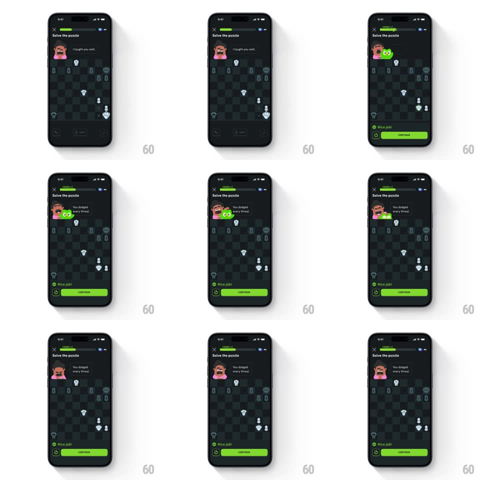

Media
Frame-by-frame

Rebuild this animation 1:1: Duolingo Chess' shocked Duo - solve the puzzle and Duo pops up beside Oscar with wide eyes and a vibrating shiver while the bubble swaps to "You dodged every threat."

Rebuild this animation 1:1: Duolingo Chess' shocked Duo - solve the puzzle and Duo pops up beside Oscar with wide eyes and a vibrating shiver while the bubble swaps to "You dodged every threat."
## Integration
Integration: stack-agnostic spec - springs given as stiffness/damping, timed motions as duration + curve; map every value to your framework and animation library of choice.
## Scene
Duolingo Chess puzzle, near-black: "Solve the puzzle" title, close X, green progress bar, Oscar top-left with his bubble ("I taught you well." then "You dodged every threat."), the chess board, and the success sheet ("Nice job!" with a green Continue button).
## Motion spec
Pattern: shocked vibrating mascot pop-up on solve.
- The correct move lands (piece slide, 250ms; destination square rings green, 400ms).
- Duo pops in next to Oscar (scale 0 -> 1.15 -> 1, spring ~420/12, ~350ms) with eyes wide and beak open - the shocked pose.
- Duo then vibrates in place: rapid +/-3px horizontal jitter at ~18Hz for 500ms, eyes darting once left-right.
- Oscar's bubble crossfades to "You dodged every threat." (200ms) as the jitter starts; the progress bar fills its segment with a green wipe (300ms).
- Duo settles, holds the impressed look for ~700ms, then the success sheet slides up (translateY 100% -> 0, spring ~320/20): green check, "Nice job!", Continue.
- Oscar stays still through all of it - Duo carries the reaction.
## Calibration
- The jitter is small and fast - a shiver, not a shake. 3px max, never blurry.
- Duo's pop and the bubble swap land on the same beat.
## Reduced motion
Duo fades in (200ms) with a single small bounce; no jitter.
## Don't miss
- Duo appears beside/behind Oscar's head level - layered behind Oscar, never covering the bubble.
- "Nice job!" and Continue arrive only after Duo's beat finishes.